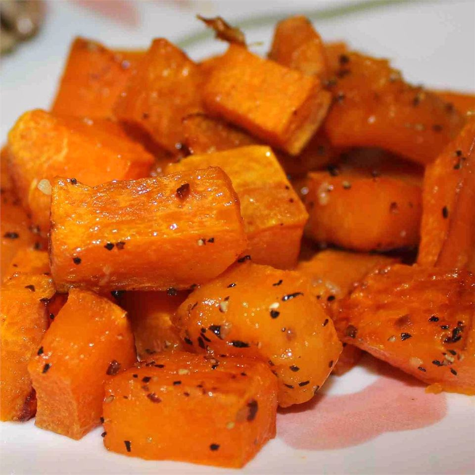

Roasted Butternut Squash

Description
Butternut squash is so good on its own, that barely any seasoning is needed. This recipe is so simple and easy.
Ingredients
- 1 butternut squash - peeled, seeded, and cut into 1-inch cubes
- 2 tablespoons olive oil
- 2 cloves garlic, minced
- salt and ground black pepper to taste
Steps
- Preheat oven to 400 degrees F
- Toss butternut squash with olive oil and garlic in a large bowl. Season with salt and black pepper. Arrange coated squash on a baking sheet.
- Roast in the preheated oven until squash is tender and lightly browned, 25 to 30 minutes.
Home